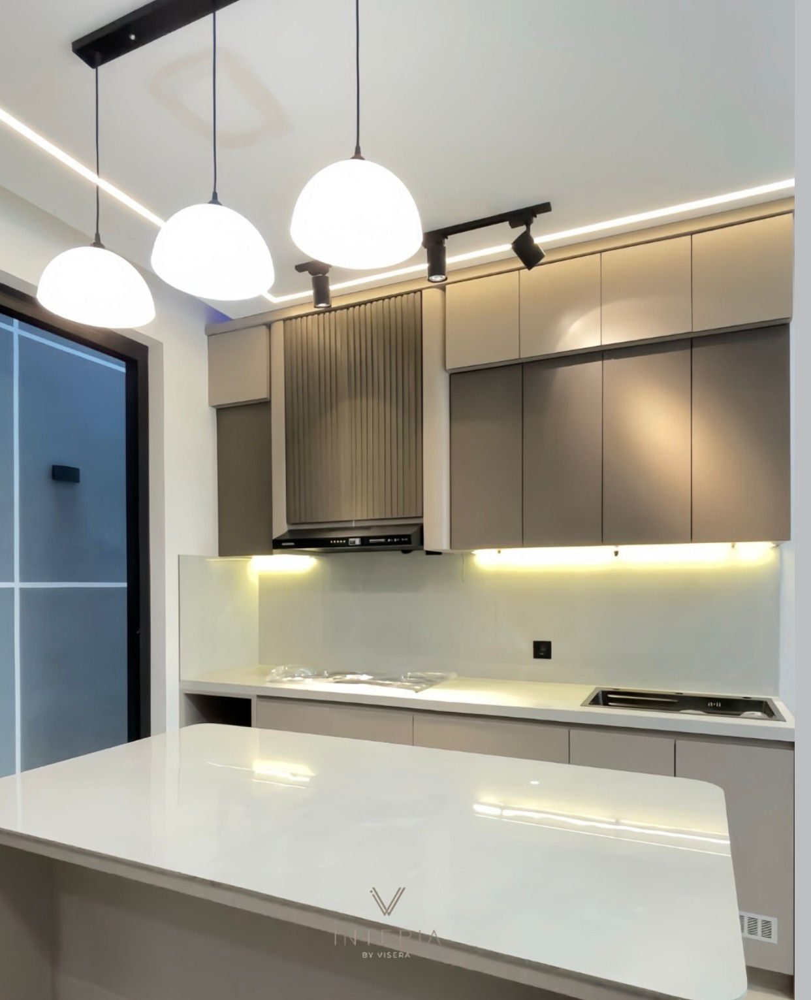
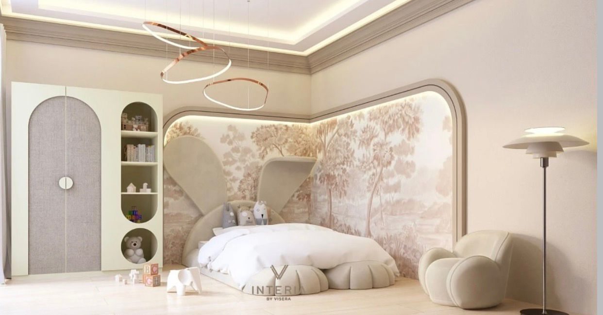
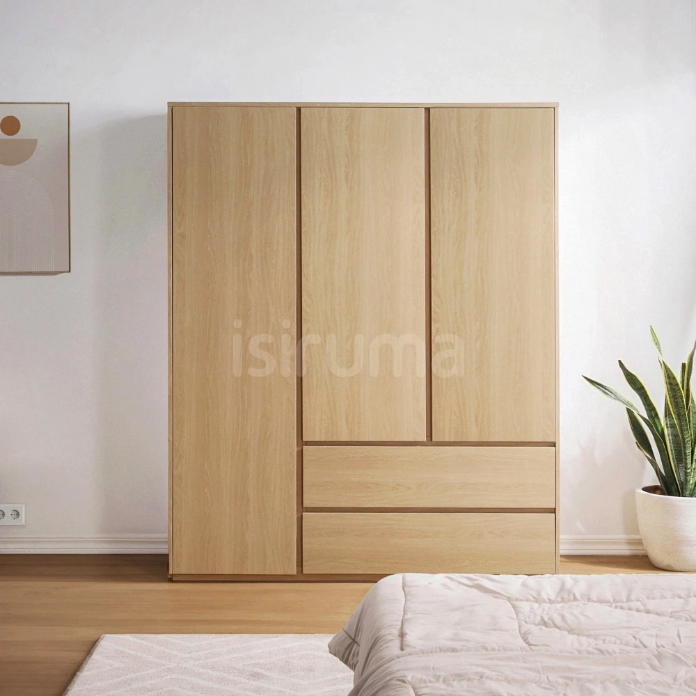
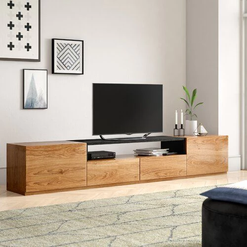

Furniture custom, dari referensi menjadi realisasi.
Diskusikan model, ukuran, fungsi, material, warna, dan anggaran. Pada sistem asli, konsultasi dilakukan melalui WhatsApp sebelum Sales Admin membuat akun dan order setelah DP terkonfirmasi.

Apa saja yang bisa dibuat custom?
Jenis furniture mengikuti alur asli INTERIA, dari upholstery sampai built-in cabinetry.
Sofa & Seating
Sofa lurus, L-shape, sofa bed, bench, dan lounge chair dengan pilihan kain, busa, dan warna.
Kitchen Set
Kabinet atas-bawah, island, pantry, dan penyimpanan yang mengikuti layout dapur.
Lemari Built-in
Lemari pakaian, storage wall, dan display cabinet dengan bukaan atau sliding.
Bedroom Set
Bed frame, headboard, nakas, meja rias, panel, dan storage satu tema.
TV Cabinet & Table
Credenza, console, meja kerja, meja makan, dan coffee table dengan fungsi terencana.
Special Request
Kirim referensi dan ukuran ruang untuk kebutuhan yang tidak masuk kategori standar.
Visual sesuai jenis furniture.
Foto di demo dipilih sesuai kategori agar pengalaman browsing terasa seperti showroom furniture yang nyata.



Dari konsultasi sampai monitoring akun.
Konsultasi
Customer menjelaskan model, fungsi, ukuran, referensi, dan estimasi anggaran.
Design & Price
Sales Admin membahas material, warna, finishing, estimasi biaya, dan timeline.
DP & Account
Setelah DP terkonfirmasi, akun customer dan order dibuat oleh Sales Admin.
Production Tracking
Customer memantau progress kayu, kain, QC SPV, shipment, dan resi.